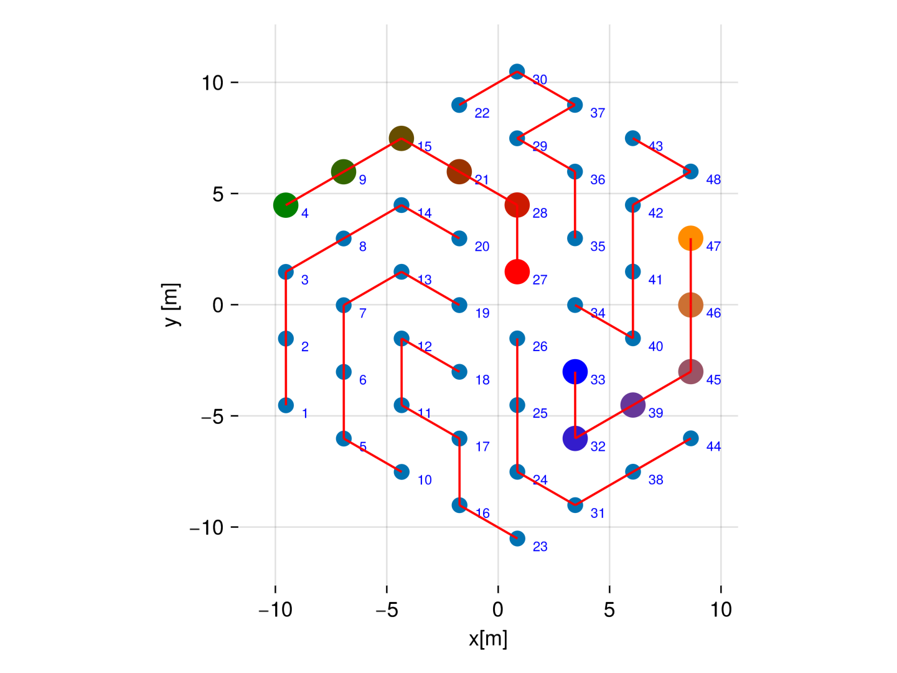

Example: Braedstrup borefield
The example considers a borehole field of 48 boreholes connected according to scheme utilized in the installation in Braedstrup, Denmark. The source code of this example can be found in examples/Braedstrup/main.jl. The field is in a porous medium with an underground water flow of $0.01 \frac{m}{\text{day}}$, which we assume to be in the $x$ direction. The borefield consists of 8 branches, each branch in parallel, and within each branch there are $6$boreholes in series. The positions and connections are represented in the following plot:

During the summer, heat is injected in the field with a fluid at a constant temperature of $90°C$ through all the branches from the center of the field. During the winter, heat is extracted by circulating the fluid at a temperature of $55°C$ from the external end of each branch and collected at the center. The simulation is done with a monthly time step duting 10 years.
Run the example
include("examples/Braedstrup/main.jl")The elapsed times for the precomputation and computation phases are:
2.449359 seconds (570.20 k allocations: 109.171 MiB, 0.66% gc time)
0.140535 seconds (255.75 k allocations: 49.735 MiB, 62.17% compilation time: 100% of which was recompilation)We can extract the result of the simulation
julia> containers.X
192×120 Matrix{Float64}:
192×120 Matrix{Float64}:
90.0 90.0 90.0 90.0 90.0 … 54.1785 53.5253 53.0836 52.7797
85.7196 86.3321 86.6953 86.9358 87.1041 53.3354 52.6224 52.1367 51.7994
85.7196 86.3321 86.6953 86.9358 87.1041 54.8461 54.2727 53.8868 53.6232
81.7574 83.051 83.8273 84.3361 84.6863 54.1785 53.5253 53.0836 52.7797
⋮ ⋱
153.897 118.897 93.5639 74.8265 60.7942 -27.2873 -20.0578 -14.7582 -10.8234
144.883 112.083 87.7717 69.5736 55.8771 -29.8091 -21.8784 -16.1027 -11.856
136.767 108.025 86.4461 69.9911 57.3688 … -28.6089 -20.7213 -15.0661 -10.9335
149.022 124.549 105.729 90.6145 78.3994 -22.1191 -15.7456 -11.0385 -7.4812Plots
In order to visualize the results, we can use the subpackage BNSPlots. For more details, refer to [Visualizing the result with BNSPlots](@ref).
Inlet borehole temperatures and heat flows for boreholes along two branches in the borehole field. The time series are color coded according to the previous configuration plot above. In addition to the inlet temperature, the output temperature from the branch (grey dot), and the mean output temperature from the field (black dot) are displayed.


Finally we can display the heatmap of the temperature field in the borehole region during the 10th year of operation

Running the code in Python
The example is also avaiable from Python. For details of how this is done refer to Running BoreholeNetworksSimulator from Python. The Python version is in:
examples/Braedstrup/main.py